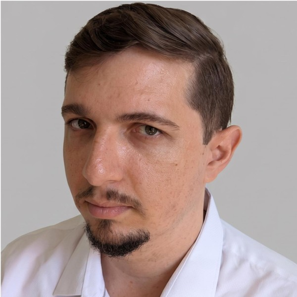
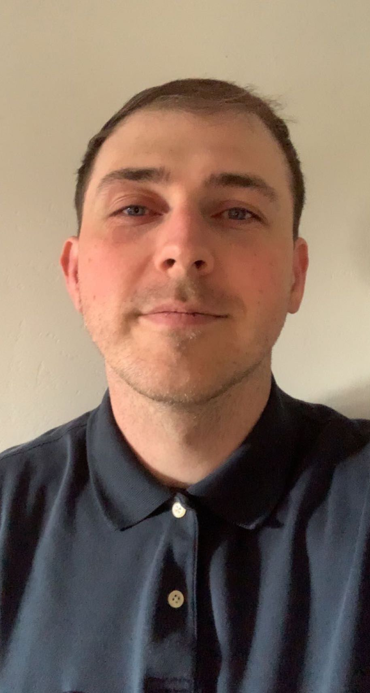
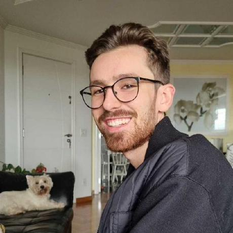

Students & Advising
Last update: August 2026
Current advisees
-

Morgan NicholsonPh.D. student · NAU · 2024-present -
 Pedro OliveiraPh.D. student, co-advisor · NAU · 2024-present
Pedro OliveiraPh.D. student, co-advisor · NAU · 2024-present -

Jacob PenneyPh.D. student, co-advisor · NAU · 2023-present -

Lucas CiziksM.Sc. student · USP · 2026-present
Former postdoctoral scholars
- Alessandro Garcia (2024)
- Katia Felizardo (2023-2024)
- João Felipe Pimentel (2022-2023)
- Igor Wiese (2019-2021)
- Igor Steinmacher (2017-2018)
- Christoph Treude (2015-2016)
Former Ph.D. students
- Italo Santos (2021-2025)
- Fabio Marcos dos Santos (2019–2023)
- Bianca Trinkenreich (2019–2022), co-advisor
- Dhanielly Rodrigues Lima (2015-2022), co-advisor
- Mairieli Santos Wessel (2018-2021)
- Ana Paula Chaves Steinmacher (2017–2020)
- Yorah Bosse (2015–2020)
- Jefferson Silva (2015–2019)
- Ana Paula Oliveira Bertholdo (2013–2018)
- Gustavo Ansaldi Oliva (2011–2017)
- Mauricio Finavaro Aniche (2012–2016)
- Igor Scaliante Wiese (2011–2016)
- Igor Fabio Steinmacher (2011–2015)
Former M.Sc. students
- Misan Paul Etchie (2024–2026)
- Luiz Felipe F. Dias (2018–2023)
- Marcelo de Rezende Martins (2018–2020)
- Suelen Goularte Carvalho (2014–2018)
- Rodrigo Magalhaes dos Santos (2014–2017)
- José Teodoro da Silva (2012–2015)
- Guilherme de Maio Nogueira (2011–2014)
- Maison Melotti (2013–2014), co-advisor
- Leonardo A. F. Leite (2011–2014)
- Mauricio José de Oliveira de Diana (2009–2013)
- Carlos Leonardo Herrera Muñoz (2009–2013)
- Edith Zaida Sonco Mamani (2009–2012)
- Straus Michalsky Martins (2009–2012)
- Geiser Chalco Challco (2008–2012)
- Mauricio Finavaro Aniche (2009–2012)
- Gustavo Ansaldi Oliva (2009–2011)
- Lucas Santos de Oliveira (2008–2010)
Former undergraduate students
- Andrew Sliva (2025–2026)
- Jacob Penney (2021)
- Jacob Stuck (2021)
- Hannah Park (2021)
- Tyler Conger (2020)
- Caitlin Abuel (2020)
- Daniel Rustrum (2019)
- Kelvin Rodriguez (2017)
- Tyler Thatcher (2017)
- James Todd (2017)
- Stephen White (2017)
- Francisco Sokol (2012)
- Thiago Silva (2012)
- Renata Luiza dos Santos Claro (2012)
- Gabriel Henrique Orso Reganati (2012)